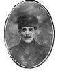

Recep Reis’in bu meçhul ve esrarengiz şahısla yaptığı konuşmaların içeriğinden arkadaşlarının bilgisi yoktu. Onları uygun bir yere götürerek gelen şahsın anlattıkları ve yapılması gerekenler hakkında bilgi vermeyi uygun buldu.
“Böyle eşkıyalığa can kurban”
“-Çok şükür artık bir iş bulduk” diyerek söze başladı İpsiz Recep. Artık kahvede boş boş oturmak yok. Paslandık hepimiz sileceğiz bu pasları”
Biri sordu:
— Ne imiş bu iş Reis?
— Eşkıyalık...
Onun böyle bir şey söyleyeceğini hiç kimse aklından bile geçirmemişti. Onun için, yüzlerde şaşkınlık dolaştı. İpsiz Recep onların bu şaşkınlığını görünce güldü:
— Beğenmediniz mi habu işi? Habu dağlar, ormanlar hep bizim olacak fena mı ula? Adımuz eşkıyaya çıkali çok oldu. Ne takamuz, ne motorumuz ne kayuğumuz var. İşi eşkıyalığa dökmeyeceğuk da ne etceğuk? Ama habu işe razı olmayan olursa olara da bir iş var... Dün duydum, Sarıyer hamamina tellâk araylermiş!
Kimse ağzını açmıyordu. O zaman İpsiz Recep gelen adamın adını ve kim olduğunu söylemeden meseleyi açtı. Kendilerinden istenen işi anlattı. Herkes de onun haydutluk, eşkıyalık dediği şeyin ne olduğunu öğrenmiş oldu. Çatılmış kaşlar gevşedi, yüzler aydınlandı:
“Böyle eşkıyalığa can kurbandı.”[38]
“Ya uçkur, ya tüfek, ikisi de bir elde olmaz”!
“Şimdi ne olacak?” diye hepsi birden Reis’in gözlerinin içine bakıyorlardı. Yalnız, İpsiz Recep’in ilave etmek istediği çok önemli bir konu daha vardı.
— Burada eşkıyalık yapacağız. Benimle ölünceye kadar beraber misiniz?
Arkadaşları yemin ederek beraber olduklarını söylediler. Reis bir daha tekrarlamıştı.
— Ya uçkur, ya tüfek, ikisi de bir elde durmaz. Söz mü?
— Söz! Cevabını almıştı. Artık İpsiz Recep çetesi bil-fiil teşekkül etmişti.
Artık Ziya Bey iki askeri sabah akşam silahla çıkarıyor. Bu askerler Hamdi Bey’in evine gelip silahları bırakarak boş dönüyorlardı. Çete silahlanmıştı. Artık icraata başlanabilirdi. Ama işe önce Sarıyer bölgesinden başlamak gerekirdi.
Andon Çetesi’nin imhası
Zekeriyaköy başta olmak üzere Terkos’a kadar bütün köylere birtakım Rum eşkıyası musallat olmuştu. Bunların başında ise Kaptan Andon adında azılı bir Rum eşkıyası vardı. Rumlar onu Girit’ten getirtmişler, bütün çeteleri de o idare ediyordu. Bunların maksatları, buralardaki köylerde yaşayan Türkleri ürkütmek, onları Anadolu tarafına kaçırmak, yerlerini de Rumlarla doldurmaktı. Sonra da buralarda Türk yoktur deyip İstanbul ve civanın Rumlara ait olduğunu iddia edeceklerdi. Bir gün Yüzbaşı Ziya:
— “Düşündük, taşındık, senin de burada olduğunu öğrenince bu işi sana vermeyi karar verdik. Bunların hakkından ancak sen gelebilirsin çünkü...” demişti İpsiz Recep’e.
— Eşkıya eşkıyanın dilinden anlar mı dersin yani?
— Sen eşkıya değil, vatanperver bir Karadenizlisin. Tabii seni zorlayacak değilim. Sana bu işi sadece vatanseverliğine güvenerek teklif ediyoruz.
İpsiz Recep burnunu çekmeye başlamıştı. Bu heyecanlandığına bir işaretti. Heyecanlandığı zamanlar hep öyle yapardı. Ve hemen kararını verdi:
— Yaparım be Yüzbaşı!
— Allah senden razı olsun! Zaten ben de senden bu cevabı bekliyordum. Bu işi kabul edeceğinden şüphem yoktu.
— Zaten adımız İpsiz’e çıkmış. Bir kuru canımızdan başka bir şeyimiz kalmamış. Ha o da memleket için feda olsun!
Andon’u ortadan kaldırmak İpsiz Recep için aslında çokta zor olmadı.
Önce Andon’un nerede eğlendiği, nereye gittiği, ne zaman ve nerede olduğu konusunda bir araştırma yapılacaktı. Öyle de oldu. Andon’un izine Vasil denen bir Rum’un restoranında rastlandı. Mutat olarak haftanın belli günlerinde buraya geliyor yiyor, içiyor ve eğleniyordu. İpsiz buraya garson olarak girmeyi başardı. Karın tokluğuna, bir de alacağı bahşiş karşılığında çalışacaktı. Planın birinci kısmı tamamlanmıştı. Fakat önemli olan ikinci kısımdı. Yani Andon’un imhası. Bunun için de İpsiz bir plan yaptı. Bu planını da arkadaşlarına bir bir anlattıktan sonra restoranda günlük mesaisine normal bir şekilde başladı. Gece hayli ilerlemiş kafalar çekilmiş, herkes zil zurna sarhoş olmuştu. Artık plan uygulanabilirdi. Emice Andon’un masasına servis tepsisiyle yanaştı. Tepsinin altında revolveri vardı. Andon’a ateş etmeye başlayınca dışarıda bekleyen adamları da içeri daldılar. Bu operasyonda sadece Andon değil adamlarının büyük çoğunluğu da temizlendi.[39]
Domuzdereli yedi Rum eşkıyanın imhası
Müttefik kuvvetleri şehrin giriş çıkışlarını, boğaz bölgelerini kontrol altında tutuyordu. Sarıyer’de de İngilizler vardı. Fakat bu onlar için yeterli değildi. Asayişsizlik ve huzursuzluk her zaman onların işine yaramaktaydı. Bu durumlar fiili müdahaleler için bire birdi. Hatta genel bir fiili işgal içinde gerekçeydi. Bu yüzden çoğu zaman Rum ve Ermenilerden kendileri çeteler oluşturuyorlardı. Çetecilik için en müsait bölgeler de yine kendi kontrollerindeki Sarıyer, Beykoz gibi boğaz bölgeleriydi. Sarıyer bölgesinde sadece Andon yoktu. Başka Rum çeteciler de faaliyet icra ediyorlardı. Ormanlar hep onlarındı. Büyük cinayetlerden sonra ve önce hep bu ormanları buluşma alanı olarak seçiyorlardı. İpsiz bunu da öğrenmişti.

Çarkçı Yüzbaşı Hamdi
1920 Martının 13. gecesi Çarkçı Yüzbaşı Hamdi Bey’in evinin bodrum katında on sekiz silahlı Laz’la İpsiz Recep Reis ve Mülazım Ziya Beyler heyecanlı kararlar veriyorlardı.
Recep Reis Anadolu’ya geçmezden evvel Belgrad Ormanlarında tam bir gösteriş yapmak istiyordu. Civar köylerdeki Rumlar iyice azmışlardı. Her biri artık işi çeteciliğe dökmüş, kanun, nizam hiç birinin umurunda değildi… Her hangi bir hadise karşısında üzerlerine gönderilen Osmanlı jandarmasının silahlarına bile el koyuyorlar, fakat yine de hiçbir şey yapılamıyordu. İstanbul hükümetinin İngilizlere şikayeti de sonuç vermiyordur. Recep Reis işte buna kızıp köpürüyordu.
Ziya Bey:
—Reis, İstanbul kenarında ortalığı velveleye vermek çok büyük iş olacak!
Recep Reis gülümseyerek karşılık verdi:
—Çok değil, yarın akşama kadar tekmil haberini alırsınız, cevabını vermişti. Recep Reis’in kararı çok müthişti. Şafak vakti saat 6.30’da Hamdi Bey’in hanesinden çıkacaklar gece uygun bir geçitte saklanacaklardı. Ertesi sabah Belgrad Ormanı’na odun kesmeğe gelerek Türk jandarmaların silahlarını almaya kadar ileri giden Rumları birer birer doğrayıp ölülerini İngilizlere bırakarak savuşup gideceklerdi.
Recep Reis yanına yalnız on dört arkadaşını alacaktı. Diğer dördünü Sarıyer taraflarında gizlice tetkikata bırakacaktı. Gece çabuk geçmişti. Şafak söküyordu. Fazla vakit geçirmeye gelmezdi.
Helalleştikten sonra…
İpsiz Recep silahlarını kuşanmıştı. On dört Laz uşağı da tüfeklerini sırtlamışlardı. Yalnız, Hamdi Bey’in evini terk ederken kimselere görünmemek icap ediyordu. Hamdi Bey alaca karanlıkta evden çıkıp etrafı gözetleyerek kimselerin kendilerini fark etmediğine kanaat getirdikten sonra geriye döndü. İpsiz Recep ile arkadaşları kapı arkasına toplanmışlardı. Hamdi Bey yavaşça:
— Kimse yok, çıkın! diye fısıldadı. Çetelerle helalleşip öpüşerek ayrıldılar. Recep Reis beş on dakikada gözden kayıp olmuştu. Recep Reis doğru Domuzdere’nin yolunu tuttu. Yol kenarına siper aldılar. Geceyi sükûnetle geçirdiler. Ne olacaksa ertesi sabah şafakla beraber olacaktı. Silahlı Rumlar her gün olduğu gibi yine köylerden akın edip Türk jandarmalarını tahkir ederek Belgrad Ormanı’na dalacaklardı.[40]
Eylem için Bahçeköy ile Uskumruköy arasındaki Kokmuşpınar adlı mevki tespit edildi. Recep Reis ve adamları yol boyundaki fundalıklar arasına uzandılar ve hafif tertip uyku kestiriyorlardı. İki gözcü bırakmışlardı. Gün doğmadan evvel gözcülerden Kör Hasan Rumları görmüş yerde sürünerek Recep Reis’in başı ucuna gelmişti.
Rumlar ormana at arabaları ile geliyorlardı. Bir anda etrafları sarıldı. Her birinin silahları ellerinden alındı. Bunlar beş kişiydiler. Birazdan üç kişi daha geldi ve onlarda etkisiz hale getirildi. Bunlar Domuzderesi köyünden geliyorlardı.[41]
İpsiz Recep pek de yalvarış yakarışlara kulak asmadı. Madem masumdular silahlarla ne geziyorlardı. Bölgede hiçbir Türk’ün çakı bıçağı bile taşımasına müsaade etmeyen İngilizler bunların koca koca silahlarını görmüyor muydu?
—Burada akşama kadar beklemek tehlikelidir. Bu işi haber alacaklarına şüphe etmem. Üzerimize belki bir tabur asker sevk ederler. Haydi, şu herifleri boğazlayın! dedi Recep Reis.
Rum eşkıya, yalvarıp yakarıyorlardı. Kim dinlerdi ki? Türk köylerini basarak kimsesiz kadınlara kadar tecavüz eden bu adamları Recep Reis temizlemeden bırakmayacağı aşikârdı.
Laz çeteciler Rum eşkıyanın üzerine atıldılar. Yedisini de hemen oldukları yerde kestiler. Recep Reis cesetleri yol üstüne sürüterek açıkta bırakılmasını istiyordu. Şüphesiz İngilizler işi haber alacaklar, İngiliz, Fransız güvenlik güçleri hâdise mahalline sevk edilecekler ya da “orman içidir, tehlikeli olur!” endişesiyle Türk jandarmasını göndereceklerdi. Ancak Recep Reis Çetesi’ni aramaya gelenler, yol üstünde aradıklarını(!) bulmuş olacaklardı. Yedi şakinin kanlı cesetleri yol boyuna çekilmiş ve sıralanmıştı. Artık daha fazla buralarda oyalanmaya lüzum yoktu.
—Haydi, gidiyoruz! dedi Recep Reis. Laz uşakları da derhal ormandan uzaklaştılar. Nereye gittiklerini Recep Reis’e sormaya cesaret edemiyordu. Reisin yapacağı hiçbir işi evvelden kimseye haber vermesi âdetinden de değildi. Herkes işbaşına geçtiği zaman vazifesinin ne olduğunu anlayıp öğrenebilirdi.
Bir miktar yol yüründükten sonra akşama yakın Zekeriyaköy kenarına gelmişlerdi. Zekeriyaköy’de Kadir Efendi’nin evi vardı. Recep Reis Kadir Efendi’nin damında geceleyecekti. On dört silahlı Laz’la, İpsiz Recep Reis sakınmaya bile lüzum görmeden Zekeriyaköy’e daldılar. Reisin geldiğini haber alan köylüler, Rum eşkıyasının gelmiş olduğunu düşünerek kapılarını kapayıp samanlıklara gizleniyorlardı. O aralık Kadir Efendi de evinden çıkmıştı. Recep Reis’i görünce:
“Korkmayın komşular. Bizim İpsiz dayıdır o” diyerek kaçıp saklanan köylülere endişeye lüzum olmadığını anlatmıştı. Kadir Efendi koşup Reis’i karşıladı. Recep Reis gülüyordu.
— “Boş odan var mı kardaşluk” diye Kadir Efendi’ye kendi hanesinde misafir kalacaklarını imâ etmişti.
Öldü diye bırakılan Rum
Recep Reis Çetesi Zekeriyaköy’de rahatlamıştı. Yiyip içildikten sonra uygun mahallere nöbetçi yerleştirip yorgunluklarını atmak üzere istirahata çekildiler. Diğer taraftansa Sarıyer çalkalanıyordu. Kör Hasan’ın ormanlıkta beygirini sularken vurduğu Rum eşkıya ölmemişti. Ölüp ölmediğini muayene eden Kör Hasan’a ölü taklidi yapmıştı. Hasan yanından ayrılarak Recep Reis’in yanına gittiği zaman Rum da sürüne sürüne yakınlardaki Rum köylerinden birine gitmişti. Rumlar korkularından ne yapacaklarını şaşırmışlar, vakit geçirmeden İngilizlere haber uçurmuşlardı.[42] İngilizler de hadiseyi derhal Makriköy (Bakırköy) Jandarma Bölük Kumandanlığı’na bildirmiş, akabinden derhal Rumeli Feneri ve Zekeriyaköy karakollarıyla Kemerburgaz takım merkezinden çıkarılan müfrezelerle takibe başlanmasını sağlamışlardı. Kendileri de Iron Duke Zırhlısı ve iki torpido ile Büyükdere’de Kavak’a kadar Boğaz’ı projektörle aydınlatıyorlardı. Böylelikle Laz çetecilerin Anadolu yakasına geçmesine mâni olacaklardı. Kısa bir müddet sonra Türk jandarmaları 7 Rum’un cesetlerine Zekeriyaköy’ün yaklaşık olarak dört kilometre güneybatısında ki Kokmuşpınar deresi adlı mahalde ulaştı.[43]
Sarıyer Polis Karakolu’nda bulunan polis memuru Sabri Efendi Recep Reis’in tehlikede olduğunu görür görmez soluk soluğa Büyükdere’ye koştu. Büyükdere Merkez memuru Mazlum Bey de Reis’i tanıyanlardan ve sevenlerdendi. İngilizlerle Rum şakîlerine meydan okuyan bu “kahraman adamı” tuzağa düşmekten kurtarmaları gerekiyordu. Mazlum Bey, Bahriye Çarkçı Yüzbaşı Hamdi Bey’in Recep Reis’le münasebeti olduğunu biliyordu. Polis Sabri Efendi’yi Hamdi Bey’e gönderdi. Hamdi Bey Recep Reis’in sabah erkenden ormana uğradığını biliyordu. Fakat ne yaptığından bilgisi yoktu. Sabri Efendi Hamdi Bey’i bulup keyfiyeti anlattı: “Rumlardan biri yaralı olarak köye gitmiş. İngilizlere haber vermişler. Şimdi her taraf karınca gibi asker ve jandarma ile sarıldı.”
Polis Sabri Efendi’nin verdiği bu izahat yeterli idi. Hamdi Bey Reis’ten az çok haber almış sayılırdı. Şimdi Recep Reis’in nerede olduğunu bulmak gerekiyordu. Recep Reis şüphesiz Zekeriyaköy’de Kadir Efendi’nin hanesinde olmalıydı. Hamdi Bey, Sabri Efendi’yi gönderdikten sonra ailesi efradından bir hanımı Zekeriyaköy’e göndermeğe karar verdi. Öyle hareket etmeli idi ki buraları saran İngilizler kadından şüphe etmemeli idiler. Hamdi Bey, hanımın yanına eli fenerli küçük bir çocuk verdi. Gece yarısı ellerindeki fenerle Sarıyer’den çıkıp gidecek olan zararsız bir kadından kimsenin şüphe etmeyeceğini düşünmüştü.
İngiliz jandarması arasından nasıl geçilir?
Hamdi Bey’in planı işe yaramıştı. Hamdi Bey’den talimat alarak yola çıkan köylü kıyafetinde bir Türk hanımı ile eli fenerli küçücük bir çocuk İngilizlerin hiç de dikkatini çekmemişti. Hanım, toz toprak içinde hayli yol yürüdükten sonra güç bela Zekeriyaköy’e varabilmişti. Köye bir yabancı girdiği köpeklerin harekete geçmesinden anlaşılmıştı. Nöbetçiler gelenlerin Hamdi Bey tarafından gönderildiklerini öğrenince yeni uykuya yatan Recep Reis’i uyandırdılar ve hanımı Reis’in yanına götürdüler.
Recep Reis, gece yarısı Hamdi Bey’in gönderdiği hanımın mühim bir şey için geldiğini anlamıştı. Mutlaka sarılmış olmalıydılar.
— Hemşire! Galiba acele bir şey var. Hamdi ne yapıyor? diye sordu. Hanım, Hamdi Bey’in söylediklerini birer birer anlattı ve Hamdi Bey’in buralarda durmaması gerektiği tavsiyesini iletti.
Hanımla çocuğu Kadir Efendi’nin ailesinin yanına yolladılar. Recep Reis arkadaşlarını alarak gece yarısı Kadir Efendi’nin evinden çıktı. Buradan Kilyos Ormanı’na gidip gizlenecek, geceyi Kilyos’ta geçirecekti. Sabah erkenden Rumeli Feneri’ne inerek oradan Anadolu yakasına geçmenin çaresine bakacaktı. Rumeli Feneri’nde her halükarda bir taka bulma imkânı vardı. İş geceyi selametle geçirebilmekteydi.
İngilizler araya dursun bakalım! ...
İngilizler her tarafı alt üst ediyorlar, Recep Reis’in izini bulamıyorlardı. Hâlbuki Reis, geceyi Kilyos Ormanı’nda geçirmişti. Sabah şafaktan önce dere bayır aşarak Rumeli Feneri’ne indiler. Fenerle Kilyos arasında sahilde küçük bir taka vardı. Reis takayı yavaşça bir kenara çektirdi. Takaya binip doğru Anadolu sahilinde Riva’ya çıktılar. Artık kurtuluş toprağına ayak basmış sayılırlardı. Recep Reis Riva’da bir gece kalacaktı. Oradan doğru Kefken Adası’na geçeceklerdi. Fakat Reisin dört uşağı Sarıyer’de kalmıştı. Onları, Hamdi Bey’in hanesinden çıktıkları sabah Sarıyer’de gözcü bırakmışlardı. Reis dört neferi almadan Kefken’e gitmek istemiyordu. Riva’dan Sarıyer’e birini göndererek arkadaşlarını getirtmeliydi. İngiliz kuvvetleri arasına girmek kolay değildi. Bu yüzden bu göreve göndereceği uşağı çok iyi seçmeliydi. Kör Hasan çok açık göz ve cesur bir çeteciydi.
— Haydi, Hasan sana geri dönmek düştü. Göreyim seni dört uşağı bul, al, gel! dedi.
Hasan:
— Peki, Reis, baş üstüne!
Diyerek silahını aldı ve takaya atladı.
Kör Hasan gözünü daldan budaktan sakınmayan bir eşkıyaydı. Riva’dan yelken açıp Büyükdere’de karaya çıktıktan sonra gerisi kolaydı. Gece Sarıyer’e geçecek oradan Hamdi Bey’i bulup dört çetenin nerede olduklarını öğrenecekti. İzlerini bulmak kendilerini alıp Riva’ya selametle göndermek demek sayılırdı. Kör Hasan Büyükdere’de bir gece yattı. Doğrudan Sarıyer’e geçmeyi tehlikeli buluyordu. Büyükdere’de gizlice tahkikat yaptı. Dört arkadaşın gün aşırı deniz boyundaki kahvelerden birine uğrayarak kahve içtiklerini öğrendi. Şüphesiz Recep Reis’in bıraktığı dört Laz uşağı Recep Reis’in bir gün kendilerine haber göndereceğini biliyorlardı. Bunun için Büyükdere ve Sarıyer civarından ayrılmıyorlardı. Ertesi akşam karanlık bastıktan sonra Kör Hasan Sarıyer’e gitti. Arkadaşlarını o civarda bulabileceğini zannediyordu. Nitekim bu zannı da boşa çıkmadı. Hasan deniz kenarında aşağı yukarı gezinirken, arkasından omzuna bir el kondu. Birden bire ürkerek belindeki keskin Laz bıçağına davrandı. Arkasından omzunu tutan aradıklarından biriydi. O sırada Hasan’ın keyfi yerine gelmişti. Hemen arkadaşının elini yakaladı:
—Ula uşaklar nerde?
Uşaklar Büyükdere arkasındaki çiftliklerden birinde barınıyorlardı. Hasan arkadaşına uşakları dağdan bayırdan Telli Tabya taraflarına getirmesini söyledi. Kendisi de takayı gece yarısı sahile yanaştırıp, onları alacaktı. Hasanla arkadaşı yol üstünde daha fazla görüşmekten çekinmişlerdi. İngiliz polisinin şüphe etmesinden korkuyorlardı.
Hasan, arkadaşından ayrıldığı gibi hemen Büyükdere’ye koştu. Vakit yatsıya yaklaşmıştı. Yelken açarak Telli Tabya’ya doğru hareket etti. Aksilik bu ya! Telli Tabya önünde İngilizlerin meşhur Iron Duke Zırhlısı geziniyordu. Sahil boynunda da iki torpido siper almıştı. Üçü de denizi projektörlerle yer yer tarıyorlardı.
Kör Hasan mavzerini doldurarak baş altına soktu. Ne olur ne olmaz, İngiliz torpidoları üzerine gelirlerse ateş edecekti. Fakat torpido nedense Hasan’ın takasını görmemişti. Kör Hasan Iron Duke Zırhlısı’nın yakınından sıyrılarak Telli Tabya kıyısına yanaştı. Burada bir parça emniyette sayılırdı. Hele az sonra dört mavzerli arkadaşı da gelirse Hasan büsbütün korkmayacaktı. Daha olmazsa beş kişi düşman torpidosunu hayli hırpalayabilirlerdi. Iron Duke Zırhlısı kalkıp da gece yarısı koca toplarını ateşleyecek değildi. Üzerlerine filika indirecekti. Yahut torpidolar takanın üstüne vararak mahmuzlamaya çalışacaklardı. Bundan da korkulamazdı.
Kör Hasan karanlıkta takayı karaya yanaştırdı. Gece yarısı olunca dört arkadaşı da tam vaktinde geldiler. Rüzgâr iyi ve dolgundu. Taka denizde süratle ilerliyordu. Anadolu Kavağı’na beş on dakikada geçmek mümkündü. Bir an önce Kavak kıyılarına ulaşmalıydılar.
Kör Hasan’ın takası tam Boğaz’ın ortasına gelmişti ki, beş altı yüz metre uzakta ağır ağır yol alarak projektörleriyle Boğaz’ı tarayan Iron Duke Zırhlısı, projektörünü tam takanın üstüne yapıştırmıştı. Şimdi hiç şüphesiz zırhlıdan takayı görmüş olacaklardı. Bereket versin torpidolar arka tarafta kalmışlardı. Iron Duke Zırhlısı takayı iyice aydınlatıyordu. Hasan ve arkadaşları mavzerlerini kavradılar. İngiliz zırhlısından takayı görmemelerine ihtimal verilemezdi. Fakat onlar Recep Reis’in adamlarının on sekiz kişi olduğunu haber aldıklarından takada bir iki insan gölgesi görünce ehemmiyet vermemiş olabilirlerdi. Kör Hasan’la arkadaşları büyük bir tehlike geçirmişlerdi.
Kavak’tan Riva’ya, oradan...
Kör Hasan’ın takası kıyıya yanaştı. Daha sonra da Riva’ya hareket ettiler. Recep Reis de onları bekliyordu. Bir an evvel Kefken’e gideceklerdi. Kör Hasan ve dört arkadaşı şafaktan evvel Riva’ya ulaştılar. Reis sabah keyfi ile ayağa kalkıp Hasanla arkadaşlarının geldiklerini görmüştü. Artık Riva’da gün geçirmeğe gerek yoktu. On sekiz kişi Riva’dan hareket ettiler. Kendi işini kendisinin bilmesi daha iyiydi. Her ihtimale karşı ihtiyatlı davranıyordu.[44]